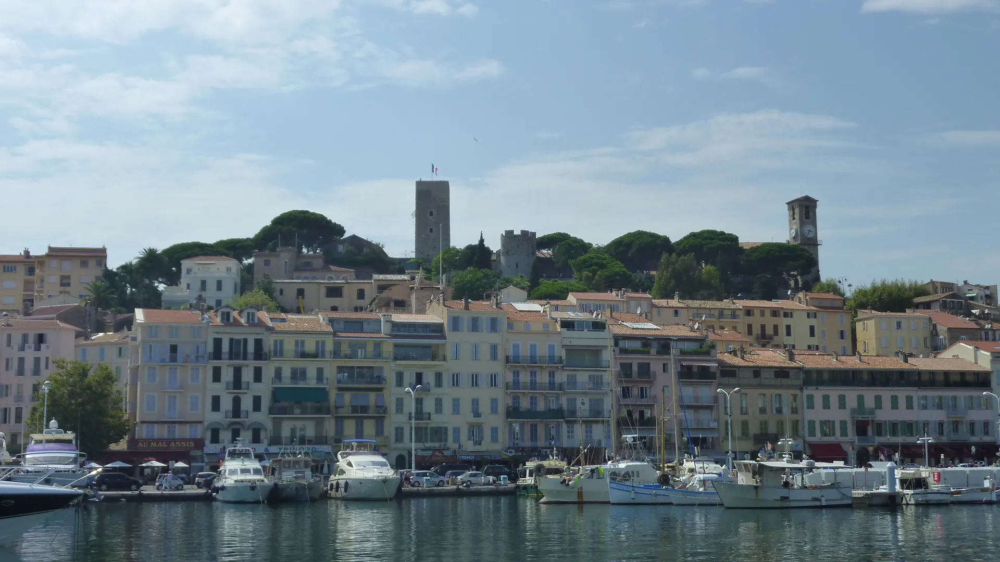
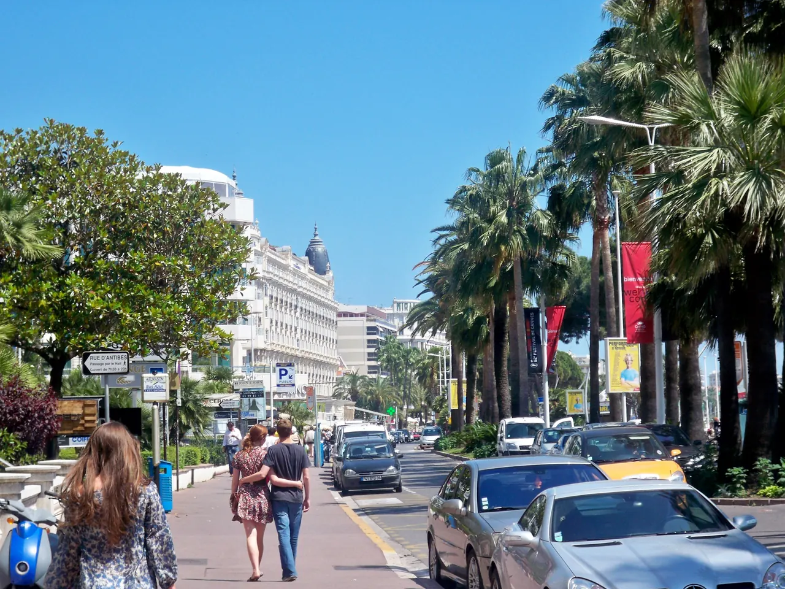

{kind=link}
{kind=link}
관광·미술관
Nous avons déjà des billets.
이미 표가 있습니다.
누 자봉 데자 데 비예

매년 5월 전 세계 영화계의 별들이 모이는 칸 국제영화제(Festival de Cannes)의 무대이자, 지중해 최고급 휴양지의 대명사다.
야자수가 늘어선 크루아제트 대로(Boulevard de la Croisette)에는 칼튼(The Carlton), 마르티네즈(Hotel Martinez) 등 전설적인 벨 에포크 럭셔리 호텔들과 명품 부티크들이 늘어서 있으며, 팔레 데 페스티벌(Palais des Festivals) 앞의 유명한 붉은 카펫 계단과 영화인들의 손자국 명판(Allée des Étoiles)이 방문객을 맞이한다.
그러나 칸의 진짜 매력은 이러한 현대적 화려함 뒤편에 있다. 1934년 세워진 포르빌 재래시장(Marché Forville)의 활기찬 아침 풍경과 11세기 어촌의 원형이 보존된 르 쉬케(Le Suquet) 언덕 골목을 오르면 화려함과 소박함이 공존하는 칸의 다층적 얼굴을 만나게 된다.
니스에서 TER 기차로 25~30분이면 닿는 부담 없는 당일치기 도시다. 칸 역에 내려 포르빌 시장에서 제철 과일을 사고, 르 쉬케 언덕 정상에서 칸 만을 내려다본 뒤, 구항구를 지나 영화제 레드카펫과 크루아제트 대로를 가볍게 걷는 2.5~3.5시간 코스가 가장 효율적이다.
| 항목 | 상세 정보 |
|---|---|
| 교통편 | Nice-Ville역에서 TER 기차 탑승 (배차 15~30분 / 소요시간 25~30분) |
| 역-중심가 | Cannes 기차역에서 포르빌 시장/팔레 데 페스티벌까지 도보 5~8분 |
| 추천 동선 | Cannes역 → 포르빌 시장 → 르 쉬케 언덕 → 구항구 → 팔레 데 페스티벌 → 크루아제트 해변 |
| 인근 추천 | 시간 여유 시 항구에서 페리로 15분 거리인 생트 마그리트 섬(Île Sainte-Marguerite, 철가면의 요새) 연계 가능 |
🚆 열차 팁: 니스와 칸을 잇는 TER 열차는 해안 절벽과 바다 바로 옆을 달리므로, 니스 출발 시 왼쪽(바다 쪽) 좌석에 앉으면 아름다운 해안선 뷰를 감상할 수 있습니다.
팔레 데 페스티벌 광장에는 약 400여 명의 세계적 영화감독과 배우들의 핸드프린팅이 보도블록에 새겨져 있다. 영화제 기간이 아닐 때도 상징적인 붉은 계단 카펫 위에서 기념사진을 찍을 수 있다.
1850년대 이전까지는 갈대숲과 작은 십자가(Croisette)만 있던 해안 흙길이었으나, 19세기 후반 유럽 귀족들의 겨울 휴양지로 개발되며 세계적인 해안 대로로 변모했다. 고운 모래사장(Plages de la Croisette)과 프라이빗 비치 클럽들이 줄지어 있다.

Nous avons déjà des billets.
이미 표가 있습니다.
누 자봉 데자 데 비예
On peut prendre des photos ?
사진 찍어도 되나요?
옹 푀 프랑드르 데 포토
Où commence la visite ?
관람은 어디서 시작하나요?
우 코망스 라 비지트

해발 92m 바위 절벽 위에서 천사의 만(Baie des Anges)과 구시가지, 림피아 항구를 360도 파노라마로 굽어보는 니스 최고의 천연 전망 공원.

지중해 꽃과 프로방스 제철 식재료, 그리고 갓 구워낸 니스 전통 소카(Socca)를 맛보는 유서 깊은 야외 시장 광장.

지중해로 60m 솟아오른 천연 바위 절벽 위에 조성된 모나코 대공국의 역사적 심장부이자 왕궁 마을.

크루아제트의 화려함 뒤에 숨겨진 11세기 옛 어촌의 가파른 돌계단 골목과 정상 성당에서 바라보는 칸 만의 파노라마.

칸 주민들의 부엌이자 지중해 해산물, 프로방스 과일, 꽃, 치즈가 가득한 1934년 유서 깊은 철골 재래시장.

관광객 중심의 쿠르 살레야와 달리 니스 현지 주민들의 진짜 장바구니 물가와 일상을 만나는 대형 야외 농산물 시장.